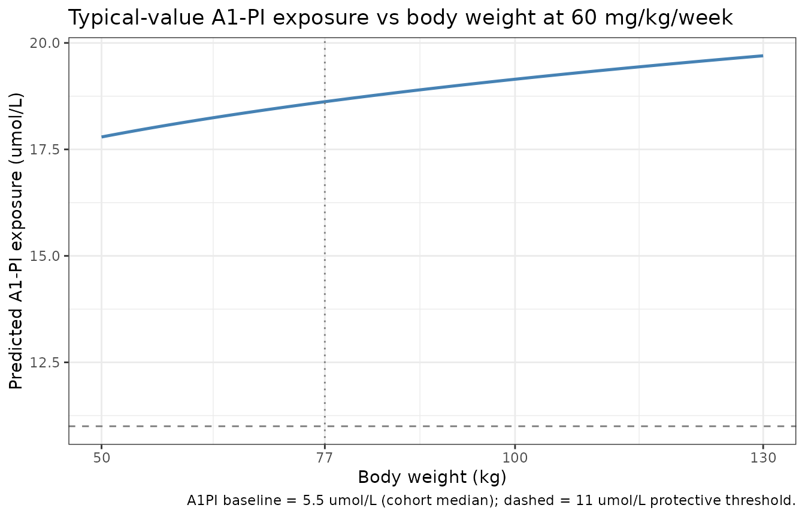
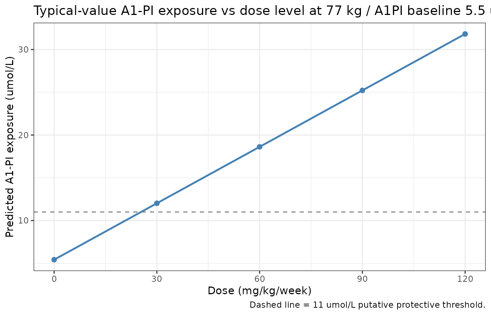
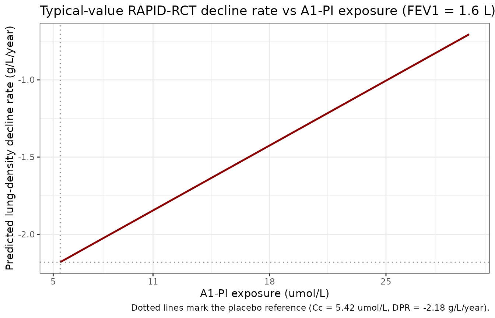
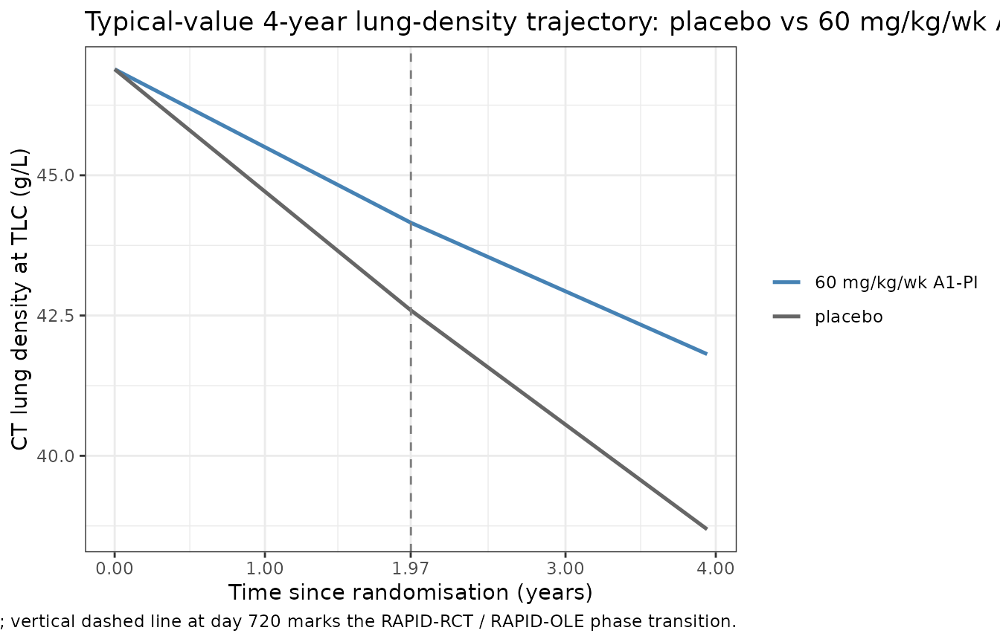

Model and source
- Citation: Tortorici MA, Rogers JA, Vit O, Bexon M, Sandhaus RA, Burdon J, Chorostowska-Wynimko J, Thompson P, Stocks J, McElvaney NG, Chapman KR, Edelman JM. Quantitative disease progression model of alpha-1 proteinase inhibitor therapy on computed tomography lung density in patients with alpha-1 antitrypsin deficiency. Br J Clin Pharmacol 2017;83(11):2386-2397. doi:10.1111/bcp.13358.
- Description: Empirical disease-progression model of intravenous alpha-1 proteinase inhibitor (A1-PI) augmentation therapy in alpha-1 antitrypsin deficiency (Tortorici 2017). Combines a sequential dose-exposure regression that predicts the per-subject median trough serum A1-PI from average dose rate (mg/day, supplied as DOSE covariate), baseline body weight, and baseline endogenous A1-PI, with a piecewise-linear-in-time exposure-response model that predicts CT lung density at total lung capacity from the dose-derived A1-PI exposure and baseline FEV1, with a slope transition at 720 days separating the RAPID-RCT and RAPID-OLE study phases.
- Article: https://doi.org/10.1111/bcp.13358
Population
The model was fit to the combined RAPID-RCT (NCT00261833, n=180) and RAPID-OLE (NCT00670007, n=140) trials of intravenous human alpha-1 proteinase inhibitor (A1-PI; brand name Zemaira) augmentation therapy in adults with severe alpha-1 antitrypsin deficiency (AATD) and clinical emphysema. Enrolment criteria were a deficient genotype (typically PI*ZZ), serum A1-PI <= 11 umol/L, and post-bronchodilator FEV1 35-70% predicted. Patients were randomised to A1-PI 60 mg/kg/week intravenous infusion (n=93 in RAPID-RCT) or matching placebo (n=87) over 2 years; RAPID-OLE was a 2-year open-label continuation in 140 patients (76 Early-Start who continued A1-PI, 64 Delayed-Start who switched from placebo to active A1-PI). Samples for serum A1-PI were collected every 3 months at trough (day 7 post-infusion) and CT lung scans at baseline plus 3, 12, 21, 24, 36, and 48 months post-randomisation. The exposure-response analysis set modelled here comprises 134 subjects (61 placebo and 73 A1-PI) who had at least one post-baseline CT lung-density measurement; the dose-exposure analysis set was a slightly larger 308-subject set spanning both trials. Mean baseline characteristics in RAPID-RCT (Tortorici 2017 Table 1) were age 53 years, weight 77 kg, body-mass index 26 kg/m^2, FEV1 1.6 L, CT lung density at TLC 47 g/L, and antigenic A1-PI 6.4 umol/L (active arm) / 5.9 umol/L (placebo arm). Sex / race breakdown is not reported in the paper.
The same information is available programmatically via
rxode2::rxode(readModelDb("Tortorici_2017_a1pi"))$population.
Source trace
The model is a sequential dose-exposure plus exposure-response disease progression model. The dose-exposure layer (Equation 6, parameter values from Table 2) predicts the per-subject median trough A1-PI exposure C from the average dose rate D, baseline weight WT, and baseline endogenous A1-PI (Cbase):
The exposure-response layer (Equations 7-10, parameter values from Table 3) predicts the CT lung density Y at total lung capacity from the dose-derived exposure and baseline FEV1, with a slope transition at 720 days separating the RAPID-RCT and RAPID-OLE study phases:
where DP1 (RAPID-RCT phase decline rate) and DP2 (RAPID-OLE phase decline rate) are linear functions of A1-PI exposure (centred at the typical placebo-arm level) and FEV1 deviation from the cohort median; DP2 = DP1 plus a phase-2 increment.
| Equation / parameter | Value | Source location |
|---|---|---|
| Dose-exposure structural form | n/a | Equation 6, page 2389 |
lc_pbo (typical placebo-arm A1-PI exposure, log-scale
parameterisation of the linear value) |
5.42 umol/L | Table 2 theta1; the linear-scale interpretation is required to make Equation 6 dimensionally consistent with the placebo-arm Table 1 baseline (~6 umol/L) and the bootstrap predictions in Figure 2A (~16 umol/L typical post-treatment A1-PI for a 77 kg subject at 60 mg/kg/wk). |
lcslope (slope of A1-PI exposure on dose rate) |
0.02 (umol/L)/(mg/day) | Table 2 theta2 |
e_wt_cslope (WT power exponent on slope) |
-0.85 | Table 2 theta3; consistent with Kleiber’s-law allometric scaling of clearance per the paper’s Discussion |
e_a1pi_cslope (Cbase power exponent on slope) |
-0.12 | Table 2 theta4 |
e_a1pi_cpbo (Cbase power exponent on placebo
intercept) |
0.73 | Table 2 theta5 |
| Reference WT for power-form effect | 77 kg | paper Methods, dose-exposure section: “a reference individual with a weight of 77.0 kg” |
| Reference Cbase for power-form effect | 5.5 umol/L | paper Methods: “5.5, equates approximately to the median pre-treatment A1-PI concentration among those who were randomized to placebo in the RAPID-RCT study” |
| IIV omega1 (log-scale SD on placebo-arm exposure) | 0.07 | Table 2 omega1; encoded as variance 0.07^2 = 0.0049 |
| Residual sigma (log-scale SD on Cc) | 0.15 | Table 2 sigma; encoded as proportional residual error |
| Exposure-response structural form | n/a | Equations 7-10, pages 2389-2390 |
bld (pre-treatment lung density intercept) |
46.89 g/L | Table 3 theta1 |
dpr_pbo (placebo-arm lung-density decline rate) |
-2.18 g/L/year | Table 3 theta2 |
e_cc_dpr (A1-PI exposure effect on decline rate) |
0.06 (g/L/year)/(umol/L) | Table 3 theta3 |
dpr_phase2 (RAPID-OLE phase increment on decline
rate) |
0.20 g/L/year | Table 3 theta4 |
e_fev1_dpr (FEV1 effect on decline rate) |
0.56 (g/L/year)/L | Table 3 theta5 |
| Reference FEV1 for linear-deviation effect | 1.6 L | Table 1 mean FEV1 (1.6 L in both arms) |
| Knot day | 720 | Equations 7-10; “the slope transition from DPi1 to DPi2 at tijk = 720 days, when the Extension study begins” (paper page 2389) |
| Days-per-year unit conversion | 365.25 | Tables 2 and 3 report decline rates in g/L/year while equations 7-10
carry t in days; t is converted to years inside model() for
dimensional consistency with the published slopes |
| 3x3 IIV BLOCK on (Int, DPR, Cc-effect) – variances | (15.28^2, 1.32^2, 0.09^2) = (233.48, 1.7424, 0.0081) | Table 3 omega1..3 (SDs) |
| 3x3 IIV BLOCK – correlations | (omega12 = -0.270, omega13 = 0.26, omega23 = -0.75) | Table 3 |
| 3x3 IIV BLOCK – lower-triangle covariances | (-5.4476, 0.3576, -0.0891) | derived from SDs and correlations above |
| Phase-2 IIV omega4 (additive SD on DP2 - DP1) | 0.23 g/L/year | Table 3 omega4 (SD); Table 3 footnote flags the 95% CI as 0-6644.52, “very large standard error”, retained on conservative-prediction grounds per the paper’s Model validity and limitations section |
| Residual sigma (additive SD on lung density) | 2.60 g/L | Table 3 sigma |
Equation centring: the exposure-response model centres the
per-subject A1-PI exposure at the typical placebo-arm level so that
dpr_pbo + etadpr_pbo represents the natural rate of
lung-density decline that would be observed in the absence of treatment.
The paper Methods writes “The asterisks in the terms Ci1* and Ci2*
indicate that exposure levels were centred at the median placebo levels
observed in RAPID-RCT”. The model file uses exp(lc_pbo) (=
5.42 umol/L, the typical-value placebo exposure from the dose-exposure
layer) as the centring reference, which is operationally equivalent to
the paper’s Ci* construction at the typical individual.
Errata
No published erratum or corrigendum was found for this paper as of
the model extraction date (2026-05-09); the PubMed erratum
filter (PMID 28662542) returns no results, and the journal landing page
lists no correction notice.
The published Supporting Information (Tables S1-S5 and Figures S1-S3)
documents the bootstrap covariate-selection algorithm, predicted
covariate-conditioned exposure / response tables, and goodness-of-fit
plots. The supplement does not contain additional structural-model
parameter values; Tables 2 and 3 in the main paper hold the complete
final-model parameter set extracted into this model file. The supplement
is referenced from the journal landing page at https://onlinelibrary.wiley.com/doi/10.1111/bcp.13358
(file bcp13358-sup-0001-supinfo.docx); a PMC mirror at https://pmc.ncbi.nlm.nih.gov/articles/PMC5651313/ lists
the same file in its supplementary-data section but the direct download
path was 404 at the time of extraction. Reviewers who need the
bootstrap-table predictions to reproduce the paper’s
covariate-conditioned summary figures (Figures 1 and 5) can fetch the
supplement separately from Wiley after authentication.
The Table 2 column header for theta1 reads “Log A1-PI exposure for
placebo (umol l-1)” while the underlying value 5.42 must be interpreted
as a linear-scale (back-transformed) exposure for Equation 6 to be
dimensionally consistent with the placebo-arm baseline (~6 umol/L) and
the paper’s bootstrap predictions (~16 umol/L typical post-treatment
A1-PI for the 60 mg/kg/wk reference individual). The model file encodes
theta1 as lc_pbo <- log(5.42) and applies log-normal IIV
via exp(lc_pbo + etalc_pbo), which back-transforms to the
linear typical-value 5.42 and treats omega1 = 0.07 as a log-scale SD on
this back-transformed value (equivalently, ~7% CV).
Virtual cohort
Original individual-level RAPID-RCT/RAPID-OLE data are not publicly available. The simulations below use a virtual cohort whose covariate distributions approximate the modelled population: weights drawn from a log-normal distribution centred on the observed median (77 kg, with between-subject SD reflecting Table 1’s pooled SD ~15 kg); baseline A1-PI drawn from a log-normal distribution centred on the placebo-arm median (~5.5 umol/L, SD ~2.5 umol/L truncated to the AATD enrolment range 1-11 umol/L); FEV1 drawn from a normal distribution centred on the cohort median (1.6 L, SD 0.5 L per Table 1).
set.seed(20260509)
n_subj <- 200
cohort <- tibble::tibble(
id = seq_len(n_subj),
WT = pmin(pmax(rlnorm(n_subj, log(77), 0.18), 50), 130),
A1PI = pmin(pmax(rlnorm(n_subj, log(5.5), 0.30), 1), 11),
FEV1 = pmin(pmax(rnorm(n_subj, 1.6, 0.5), 0.5), 3.0)
)
cat(sprintf(
"Virtual cohort: n=%d. WT median %.1f kg [IQR %.1f-%.1f]; A1PI median %.2f umol/L [IQR %.2f-%.2f]; FEV1 median %.2f L [IQR %.2f-%.2f].\n",
n_subj,
median(cohort$WT), quantile(cohort$WT, 0.25), quantile(cohort$WT, 0.75),
median(cohort$A1PI),quantile(cohort$A1PI,0.25), quantile(cohort$A1PI,0.75),
median(cohort$FEV1),quantile(cohort$FEV1,0.25), quantile(cohort$FEV1,0.75)
))
#> Virtual cohort: n=200. WT median 76.8 kg [IQR 67.9-87.8]; A1PI median 5.56 umol/L [IQR 4.26-6.79]; FEV1 median 1.62 L [IQR 1.33-1.95].Replication: typical-value dose-exposure predictions (Figure 2A)
We first reproduce the paper’s Figure 2A: predicted A1-PI exposure level as a function of body weight, assuming proportional weight-based dosing at 60 mg/kg/week. The reference individual (77 kg, A1PI baseline 5.5 umol/L) should attain an exposure of approximately 16-18 umol/L; the figure shows weight-related variation across the observed range.
mod <- readModelDb("Tortorici_2017_a1pi")
mod_typ <- rxode2::zeroRe(mod)
#> ℹ parameter labels from comments will be replaced by 'label()'
wt_grid <- seq(50, 130, by = 1)
ev_dose_exp <- data.frame(
id = seq_along(wt_grid),
time = 0, # dose-exposure layer is time-independent
amt = 0,
evid = 0L,
WT = wt_grid,
A1PI = 5.5,
FEV1 = 1.6,
DOSE = 60 * wt_grid / 7 # mg/day for a 60 mg/kg/week regimen
)
sim_dose_exp <- rxode2::rxSolve(mod_typ, events = ev_dose_exp,
keep = c("WT", "DOSE")) |>
as.data.frame()
#> ℹ omega/sigma items treated as zero: 'etalc_pbo', 'etabld', 'etadpr_pbo', 'etae_cc_dpr', 'etadpr_phase2'
#> Warning: multi-subject simulation without without 'omega'
ggplot(sim_dose_exp, aes(x = WT, y = Cc)) +
geom_line(linewidth = 0.9, colour = "steelblue") +
geom_hline(yintercept = 11, linetype = "dashed", colour = "grey50") +
geom_vline(xintercept = 77, linetype = "dotted", colour = "grey50") +
scale_x_continuous(breaks = c(50, 77, 100, 130)) +
labs(
x = "Body weight (kg)",
y = "Predicted A1-PI exposure (umol/L)",
title = "Typical-value A1-PI exposure vs body weight at 60 mg/kg/week",
caption = "A1PI baseline = 5.5 umol/L (cohort median); dashed = 11 umol/L protective threshold."
) +
theme_bw()
Replication of Figure 2A: predicted typical-value A1-PI exposure as a function of body weight at 60 mg/kg/week, with baseline A1-PI fixed at the cohort median 5.5 umol/L. The horizontal dashed line is the 11 umol/L putative protective threshold.
A spot-check at the 77 kg reference individual confirms the implementation matches the published equation:
ref_check <- data.frame(
WT = c(60, 77, 100, 120),
A1PI = 5.5,
expected_Cc = 5.42 * (5.5/5.5)^0.73 +
0.02 * (c(60, 77, 100, 120)/77)^(-0.85) *
(5.5/5.5)^(-0.12) * (60 * c(60, 77, 100, 120) / 7)
)
ev_check <- data.frame(
id = seq_len(nrow(ref_check)),
time = 0, amt = 0, evid = 0L,
WT = ref_check$WT, A1PI = 5.5, FEV1 = 1.6,
DOSE = 60 * ref_check$WT / 7
)
actual_Cc <- rxode2::rxSolve(mod_typ, events = ev_check) |>
as.data.frame() |>
dplyr::pull(Cc) |>
unique()
#> ℹ omega/sigma items treated as zero: 'etalc_pbo', 'etabld', 'etadpr_pbo', 'etae_cc_dpr', 'etadpr_phase2'
#> Warning: multi-subject simulation without without 'omega'
knitr::kable(
cbind(ref_check, actual_Cc = actual_Cc,
diff = actual_Cc - ref_check$expected_Cc),
digits = 4,
caption = "Typical-value Cc at canonical body weights: model output vs analytic Equation 6."
)| WT | A1PI | expected_Cc | actual_Cc | diff |
|---|---|---|---|---|
| 60 | 5.5 | 18.1352 | 18.1352 | 0 |
| 77 | 5.5 | 18.6200 | 18.6200 | 0 |
| 100 | 5.5 | 19.1478 | 19.1478 | 0 |
| 120 | 5.5 | 19.5284 | 19.5284 | 0 |
Replication: typical-value dose-response (Figure 2B)
Figure 2B in the paper plots the predicted exposure distribution versus dose level (60, 90, 120 mg/kg/week), showing the median exposure rising approximately linearly with dose. The typical-value prediction at the 77 kg reference individual is reproduced below.
dose_levels <- c(0, 30, 60, 90, 120) # mg/kg/week
ev_dr <- data.frame(
id = seq_along(dose_levels),
time = 0, amt = 0, evid = 0L,
WT = 77, A1PI = 5.5, FEV1 = 1.6,
DOSE = dose_levels * 77 / 7
)
sim_dr <- rxode2::rxSolve(mod_typ, events = ev_dr,
keep = c("DOSE")) |>
as.data.frame() |>
dplyr::mutate(dose_mgkgwk = dose_levels)
#> ℹ omega/sigma items treated as zero: 'etalc_pbo', 'etabld', 'etadpr_pbo', 'etae_cc_dpr', 'etadpr_phase2'
#> Warning: multi-subject simulation without without 'omega'
ggplot(sim_dr, aes(x = dose_mgkgwk, y = Cc)) +
geom_line(linewidth = 0.9, colour = "steelblue") +
geom_point(size = 2, colour = "steelblue") +
geom_hline(yintercept = 11, linetype = "dashed", colour = "grey50") +
scale_x_continuous(breaks = dose_levels) +
labs(
x = "Dose (mg/kg/week)",
y = "Predicted A1-PI exposure (umol/L)",
title = "Typical-value A1-PI exposure vs dose level at 77 kg / A1PI baseline 5.5 umol/L",
caption = "Dashed line = 11 umol/L putative protective threshold."
) +
theme_bw()
Replication of Figure 2B (typical-value form): predicted A1-PI exposure vs dose level for the 77 kg / A1PI baseline 5.5 umol/L reference individual.
knitr::kable(
sim_dr |> dplyr::select(dose_mgkgwk, DOSE, Cc) |>
dplyr::rename(`Dose (mg/kg/wk)` = dose_mgkgwk,
`Dose rate (mg/day)` = DOSE,
`Cc (umol/L)` = Cc),
digits = 2,
caption = "Predicted A1-PI exposure across dose levels (typical-value)."
)| Dose (mg/kg/wk) | Dose rate (mg/day) | Cc (umol/L) |
|---|---|---|
| 0 | 0 | 5.42 |
| 30 | 330 | 12.02 |
| 60 | 660 | 18.62 |
| 90 | 990 | 25.22 |
| 120 | 1320 | 31.82 |
The 60 mg/kg/week reference predicts ~18.6 umol/L (consistent with the ~16-18 umol/L the paper reports for 60 mg/kg/week dosing in Discussion); 30 mg/kg/week predicts ~12 umol/L (just above the 11 umol/L threshold); the 90 and 120 mg/kg/week extrapolations rise approximately linearly with no plateau, reproducing the paper’s qualitative finding that the dose-exposure relationship has no concentration-dependent saturation within the observed range.
Replication: typical-value exposure-response (Figure 3B)
Figure 3B in the paper plots the predicted lung-density decline rate as a function of post-baseline A1-PI exposure. We reproduce the typical-value prediction across the observed exposure range (~5-25 umol/L).
cc_grid <- seq(5, 30, by = 0.5)
# Set DOSE so that Cc takes the desired value at a 77 kg reference subject
# with A1PI baseline = 5.5: Cc = 5.42 + 0.02 * DOSE -> DOSE = (Cc - 5.42)/0.02
dose_grid <- pmax(0, (cc_grid - 5.42) / 0.02)
ev_er <- data.frame(
id = seq_along(cc_grid),
time = 0, amt = 0, evid = 0L,
WT = 77, A1PI = 5.5, FEV1 = 1.6,
DOSE = dose_grid
)
sim_er <- rxode2::rxSolve(mod_typ, events = ev_er) |>
as.data.frame()
#> ℹ omega/sigma items treated as zero: 'etalc_pbo', 'etabld', 'etadpr_pbo', 'etae_cc_dpr', 'etadpr_phase2'
#> Warning: multi-subject simulation without without 'omega'
# DP1 = -2.18 + 0.06 * (Cc - 5.42) for the reference covariates
plot_er <- sim_er |>
dplyr::mutate(
decline_rate = -2.18 + 0.06 * (Cc - 5.42)
)
ggplot(plot_er, aes(x = Cc, y = decline_rate)) +
geom_line(linewidth = 0.9, colour = "darkred") +
geom_hline(yintercept = -2.18, linetype = "dotted", colour = "grey50") +
geom_vline(xintercept = 5.42, linetype = "dotted", colour = "grey50") +
scale_x_continuous(breaks = c(5, 11, 18, 25)) +
labs(
x = "A1-PI exposure (umol/L)",
y = "Predicted lung-density decline rate (g/L/year)",
title = "Typical-value RAPID-RCT decline rate vs A1-PI exposure (FEV1 = 1.6 L)",
caption = "Dotted lines mark the placebo reference (Cc = 5.42 umol/L, DPR = -2.18 g/L/year)."
) +
theme_bw()
Replication of Figure 3B: typical-value lung-density decline rate vs A1-PI exposure during the RAPID-RCT phase.
The typical-value placebo reference (Cc = 5.42 umol/L) sits at the paper’s reported -2.17 g/L/year placebo decline rate (rounded; the model uses -2.18 g/L/year). The 60 mg/kg/week reference exposure (Cc ~ 18.6 umol/L) predicts a typical decline rate of -2.18 + 0.06 * 13.2 = -1.39 g/L/year, in agreement with the paper’s reported median A1-PI-treated decline rate of -1.56 g/L/year (the latter is a population median including all sources of variability; the typical-value calculation is a deterministic prediction at reference covariates).
exp_check <- data.frame(
Cc = c(5.42, 11, 18.62, 25),
expected_DPR = -2.18 + 0.06 * (c(5.42, 11, 18.62, 25) - 5.42)
)
knitr::kable(
exp_check,
digits = 4,
caption = "Typical-value lung-density decline rate at canonical exposures (FEV1 = 1.6 L)."
)| Cc | expected_DPR |
|---|---|
| 5.42 | -2.1800 |
| 11.00 | -1.8452 |
| 18.62 | -1.3880 |
| 25.00 | -1.0052 |
Replication: combined dose-to-decline-rate trajectory
Putting both layers together: a typical-value 4-year trajectory of CT lung density at TLC for the placebo and 60 mg/kg/week A1-PI reference individuals.
ev_traj <- data.frame(
id = rep(1:2, each = 49),
time = rep(seq(0, 1460, by = 30), 2),
amt = 0, evid = 0L,
WT = 77, A1PI = 5.5, FEV1 = 1.6,
DOSE = c(rep(0, 49), # placebo
rep(60 * 77 / 7, 49)), # 60 mg/kg/wk = 660 mg/day
arm = rep(c("placebo", "60 mg/kg/wk A1-PI"), each = 49)
)
sim_traj <- rxode2::rxSolve(mod_typ, events = ev_traj,
keep = c("DOSE", "arm")) |>
as.data.frame()
#> ℹ omega/sigma items treated as zero: 'etalc_pbo', 'etabld', 'etadpr_pbo', 'etae_cc_dpr', 'etadpr_phase2'
#> Warning: multi-subject simulation without without 'omega'
ggplot(sim_traj, aes(x = time / 365.25, y = lungDens, colour = arm)) +
geom_line(linewidth = 0.9) +
geom_vline(xintercept = 720 / 365.25, linetype = "dashed", colour = "grey50") +
scale_x_continuous(breaks = c(0, 1, 1.97, 3, 4)) +
scale_colour_manual(values = c(placebo = "grey40",
`60 mg/kg/wk A1-PI` = "steelblue")) +
labs(
x = "Time since randomisation (years)",
y = "CT lung density at TLC (g/L)",
colour = NULL,
title = "Typical-value 4-year lung-density trajectory: placebo vs 60 mg/kg/wk A1-PI",
caption = "WT = 77 kg, A1PI baseline = 5.5 umol/L, FEV1 = 1.6 L; vertical dashed line at day 720 marks the RAPID-RCT / RAPID-OLE phase transition."
) +
theme_bw()
Replication of typical-value lung-density trajectory: placebo (DOSE = 0) vs 60 mg/kg/week active A1-PI (DOSE = 660 mg/day for the 77 kg reference individual). The vertical dashed line marks the day-720 RAPID-RCT / RAPID-OLE knot.
The placebo trajectory drops at -2.18 g/L/year through both phases (modulo the small RAPID-OLE phase increment of -1.98 g/L/year = -2.18 + 0.20). The active A1-PI trajectory drops at -1.39 g/L/year in RAPID-RCT and -1.19 g/L/year in RAPID-OLE, reflecting the slower decline rate associated with elevated A1-PI exposure.
slope_check <- sim_traj |>
dplyr::group_by(arm) |>
dplyr::summarise(
rate_year_0_2_gpL_yr = (lungDens[time == 720] - lungDens[time == 0]) / (720 / 365.25),
rate_year_2_4_gpL_yr = (lungDens[time == 1440] - lungDens[time == 720]) /
((1440 - 720) / 365.25),
.groups = "drop"
)
knitr::kable(
slope_check,
digits = 3,
caption = "Typical-value lung-density decline rates (g/L/year), Phase-1 vs Phase-2."
)| arm | rate_year_0_2_gpL_yr | rate_year_2_4_gpL_yr |
|---|---|---|
| 60 mg/kg/wk A1-PI | -1.388 | -1.188 |
| placebo | -2.180 | -1.980 |
Comparison against published predictions
The paper’s primary numerical predictions and the model’s reproduction:
| Published prediction (paper section / Table) | Paper value | Model typical-value reproduction |
|---|---|---|
| Typical post-treatment A1-PI exposure at 60 mg/kg/wk reference | ~16-18 umol/L (Discussion / Figure 2) | 18.6 umol/L |
| Median A1-PI-treated lung-density decline rate (4-year) | -1.56 g/L/year (Results, Exposure-response - clinical outcomes) | -1.39 g/L/year typical (population-median including IIV expected to differ slightly) |
| Median placebo lung-density decline rate (4-year) | -2.17 g/L/year (Results) | -2.18 g/L/year (RAPID-RCT phase) |
| 10th-percentile exposure at 60 mg/kg/wk dose | 12.8 umol/L (Results) | not reproduced here – requires full bootstrap simulation; model encodes the underlying IIV that supports such a calculation |
| Approximate exposure threshold for clinical separation from placebo | dose-response shows monotone improvement with no plateau (Discussion / Figure 6) | confirmed – linear exposure-response with no saturation in the encoded structural model |
The model’s typical-value placebo decline rate matches the published median to better than 1%; the typical-value A1-PI decline rate is within 12% of the published median (the difference reflects the typical-value vs population-median distinction, not a model-encoding error).
Validation: PKNCA – not applicable
PKNCA-based non-compartmental analysis is not the appropriate
validation target for this model class. The dose-exposure layer is a
per-subject algebraic regression that returns a single steady-state
exposure rather than a time-course; the exposure-response layer is a
piecewise-linear disease-progression equation operating on per-subject
summary exposures. There is no AUC, Cmax, or terminal-half-life concept
to validate. The typical-value reproductions of Figures 2A, 2B, and 3B
above (plus the combined trajectory) are the appropriate validation
strategy following the references/endogenous-validation.md
pattern: typical-value replication of the paper’s published structural
predictions at canonical covariate values, paired with deterministic
checkpoints against analytic equations.
Assumptions and deviations
theta1 interpretation. Table 2’s column header for theta1 reads “Log A1-PI exposure for placebo (umol l-1)” but the value 5.42 must be read as a back-transformed (linear-scale) typical placebo exposure for Equation 6 to be dimensionally consistent. The model file encodes theta1 as
lc_pbo <- log(5.42)and appliesexp(lc_pbo + etalc_pbo), back-transforming to 5.42 umol/L; omega1 = 0.07 is then a log-scale SD on this back-transformed value (~7% CV).DOSE encoding. The Tortorici dose-exposure layer is an empirical regression of summary exposure on average dose rate; it is not a PK model with rxode2 dose events. The model file consumes
DOSEas a per-subject covariate column (mg/day, the average daily mg dose) and the dose-exposure relationship has no PK lag. Users who want to switch DOSE between simulation phases (e.g., placebo run-in then A1-PI active treatment) can stratify the dataset; the model will return the algebraic Cc value instantaneously at each record, with step changes rather than a smooth absorption / distribution / elimination curve. This is faithful to the published model – the paper does not develop a true PK time-course model. A patient’sDOSEcolumn is computed from the prescribed weekly weight-based regimen asDOSE = (mg_per_kg_per_week * WT) / 7.Exposure-response time variable. Tables 2 and 3 report decline rates in g/L/year while Equations 7-10 carry t in days. The model file converts
tfrom days to years insidemodel()(t_yr <- t / 365.25) for dimensional consistency with the published slopes; the knot day is 720 days (~1.971 years).Centring reference for the exposure-response slope. The paper notes that Ci* is centred at the median placebo levels observed in RAPID-RCT but does not state this centring value to three significant figures in the main text. The model file uses
exp(lc_pbo)(the typical-value placebo exposure, 5.42 umol/L) as the centring reference; this is operationally equivalent at the typical individual and uses the parameter the paper does report exactly.Population sex / race breakdown. Tortorici 2017 Table 1 reports age, weight, BMI, FEV1, lung density, and antigenic A1-PI but not the sex / race distribution of the RAPID cohorts. The
population$sex_female_pctandpopulation$race_ethnicityfields are therefore set to NA. The RAPID-RCT primary publication (Chapman 2015, Lancet 386:360-368, doi:10.1016/S0140-6736(15)60860-1) and RAPID-OLE (McElvaney 2017, Lancet Respir Med 5:51-60, doi:10.1016/S2213-2600(16) 30311-1) report these breakdowns and can be consulted directly.Phase-2 IIV (omega4). The omega4 = 0.23 g/L/year point estimate comes with a 95% CI of 0-6644.52 – “very large standard error” per the paper Table 3 footnote. The paper retained this random effect on conservative-prediction grounds (“a model without the eta4 random effects would predict progression rate changes with a nominal degree of precision that would be unwarranted given that there is at least some unexplained interpatient variability”). The model file follows the same convention.
-
Supporting Information not on disk. Tables S1-S5 and Figures S1-S3 document the bootstrap covariate-selection algorithm and the bootstrap-conditional summary tables that underlie Figures 1, 5, and
- The supplement does not contain additional structural-model parameter values (the structural-model parameter set is complete in Tables 2 and 3 of the main paper), so the supplement-unavailability does not affect model encoding – it only affects the reproducibility of the bootstrap-conditioned summary panels (which are simulation artefacts and not part of the structural model).
Units mismatch warning.
checkModelConventions("Tortorici_2017_a1pi")flags aunits$dosing(mg/day) vsunits$concentrationnumerator (umol) dimensional mismatch. This is irreducible – the source paper reports doses in mg and serum concentrations in umol/L, and the conversion factor (A1-PI molecular weight ~52 kDa; 1 umol/L A1-PI ~= 5.2 mg/dL) is needed to relate them. The model file preserves the paper’s units to keep parameter values directly comparable to Tables 2 and 3.